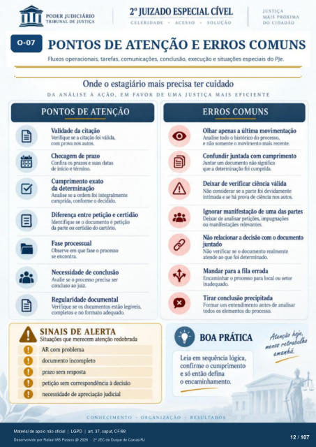

Transcrição automática em português, ainda não revisada. Confira grafia, prazos e termos jurídicos na imagem e no PDF antes de utilizar.
1
PONTOS DE ATENÇÃO E ERROS coMUNs
Fluxos operacionais, tarefas, comunicações. conclusão, execução e situações especiais do PJe. Onde o estagiário mais precisa ter cuidado
DA ANÁLISE À AÇÃO, EM FAVOR DE UMA JUSTIÇA MAIS EFICIENTE
PONTOS DE ATENÇÃO
Validade da citação Verifique se a citação foi válida,
com prova nos aut(E Checagem de prazo
Confira os prazos e suas datas de inicio e término.
Cumprimento exato da determinação
Analise se a ordem foi integralmente cumprida, conforme o decidido.
Diferença entre petição e certidão Identifique se o dcxumento é Ftiçáo
da parte ou certidáo do cartório. Fase processual
()bserve em que fase o prcxesso se encontra.
Necessidade de conclusão Avalie se o precisa ser
concluso ao juiz. Regularidade documental
Verifique estão legíveis, completos e no formato adequado.
SINAIS DE ALERTA
que merecem atenção redobrada AR com problema
dcxumento incompleto prazo sem respsta
Ftiçào sem correspndéncia à decisão necessidade de apreciação judicial
CONHECIMENTO •
ERROS COMUNS
Olhar apenas a última movimentação Analise tcxlo o histórico do prcresso.
e não *Mne-nte o movimento mais Confundir juntada com cumprimento
Juntar um dcxumento não significa que a foi cumprida.
Deixar de verificar ciência válida Não considerar se a parte foi devidamente
intimada e há prova de ciência autos. Ignorar manifestação de uma das partes
Deixar de analisar ou relevantes.
Não relacionar a corn o dcwumento juntado
Não verificar se o dcxumento realmente atende ao que foi determinado
Mandar para a fila errada Encaminhar o prcxesso para l«ral ou setor
inadequado. Tirar conclusão prEipitada
Formar um entendimento antes analisar os elernentos do
BOA PRÁTICA
Leia em sequência lógica, confirme o cumprimento
e só então defina o encaminhamento.
ORGANIZACÀO
RESULTA DOS
Ver também o infográfico original (página 12)
